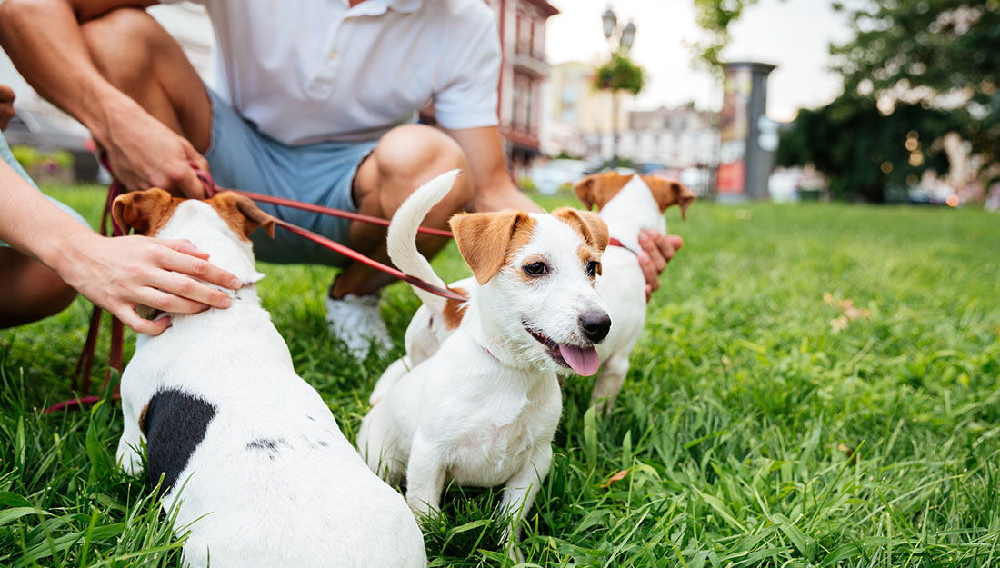

Visit Our Locations
Adopt a Puppy Jacksonville has several locations across the city where you can meet our adorable puppies and find your new furry friend. Our locations are designed to provide a safe and welcoming environment for both our puppies and visitors.
.Main Shelter Riverside Head Quarters
Located in the vibrant heart of the Riverside district, our main office and adoption center serves as the primary hub for Adopt a Puppy Jacksonville. This facility blends professional administrative operations with a warm, welcoming environment designed to help you find your new best friend.
1 Puppy and Paw Road, Jacksonville FL 32202

Facility Highlights
The Adoption Lounge:
A comfortable, home-like space where potential adopters can interact with puppies in a relaxed setting.
Riverside Green Space:
An outdoor area used for supervised play and "meet-and-greets" between puppies and their potential new families.

Administrative Suite:
Our dedicated team works here to coordinate rescues, manage volunteer schedules, and handle community outreach.
Additional Locations & Links
In addition to our main shelter, we have several satellite locations across Jacksonville where you can meet our puppies and learn more about our mission:
- San Marco Adoption Center: 3456 Goal Street, Jacksonville, FL 32216
- Beaches Adoption Center: 342 Beach Boulevard, Jacksonville, FL 32208
- Orange Park Adoption Center: 54 Orange Way, Jacksonville, FL 32204